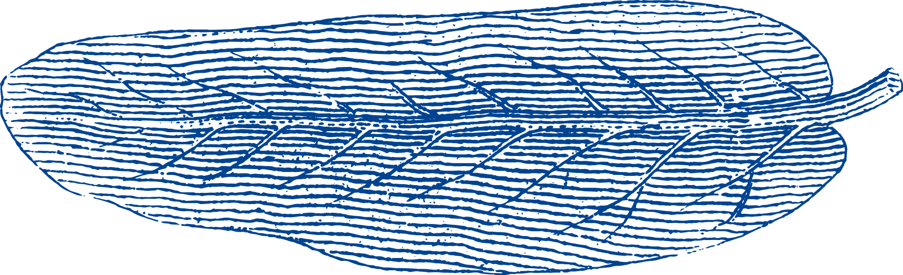
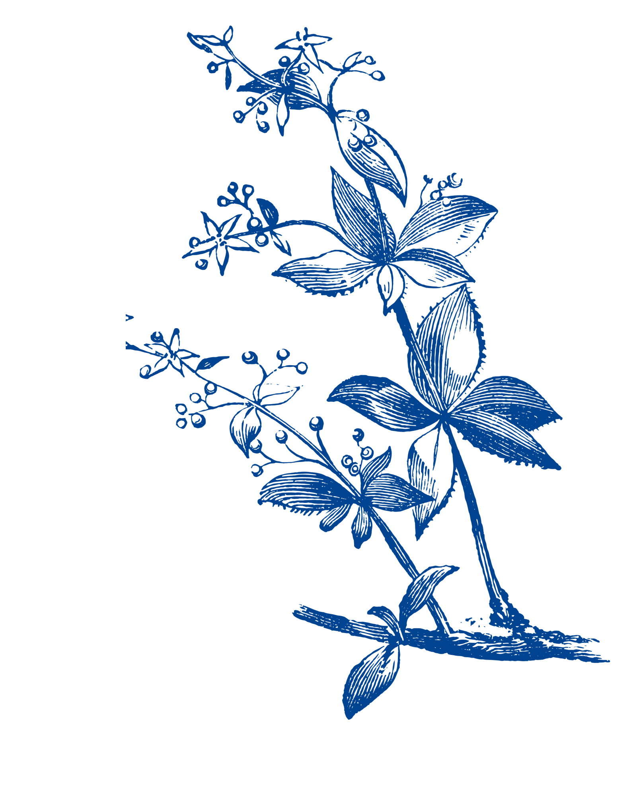
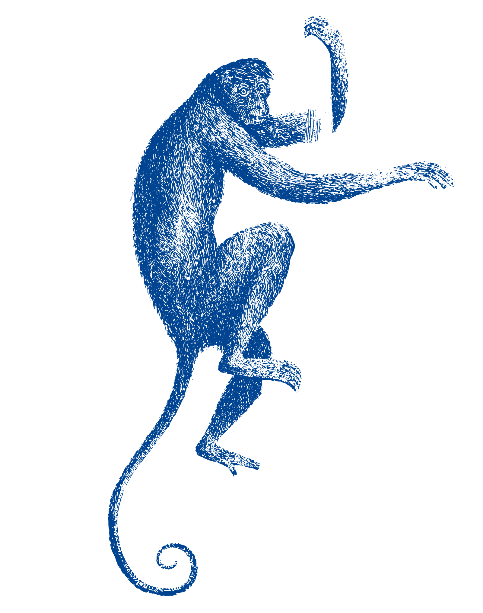

Im Mittelpunkt steht unser 5-Gang Cocktail-Tastingmenü – derzeit eine Reise durch die vier Jahreszeiten in einem Abend. Jeder Gang bringt eine eigene saisonale Facette zum Ausdruck. Daneben lädt eine Auswahl eigenständiger Cocktails dazu ein, den Abend ganz nach persönlichem Geschmack zu gestalten.
der Frühling
Floral, Frisch, Leicht
der Sommer
Früchtig, Kühl, Spritzig
das Abendrot - Zwischenspiel
Amuse-Bouche
der Herbst
Würzig, Herb, Warm
der Winter
Cremi, Süß, Verwöhnend
Klavier
Musik ist das Herzstück des Porträts. Jeden Abend begleitet Sie Live-Musik durch die Nacht und schafft eine Atmosphäre, die sich mit dem Abend stetig wandelt.
Von den ersten Drinks bis zum letzten Glas verbindet sich unsere Musik mit dem Rhythmus des Abends – mal lebendig, mal intim, immer mit Raum zum Genießen und Verweilen.
Actuel im Porträt
Vier Jahreszeiten der Sehnsucht
Sehnsucht ist eine musikalische Reise durch vier Jahreszeiten und die vielen Formen des Verlangens – von Leichtigkeit und Aufbruch bis zu Erinnerung und Melancholie. Werke von Mozart, Chopin, und Debussy begegnen den zeitgenössischen Klangwelten von Studio Ghibli und ausgewählten Melodien aus Film und Anime. Was sie verbindet, ist nicht ihre Epoche, sondern ihr Gefühl: Nähe und Ferne, Traum und Wirklichkeit, Erinnerung und Sehnsucht. Vier Jahreszeiten. Ein Gefühl.Abende
Enjoy events ().